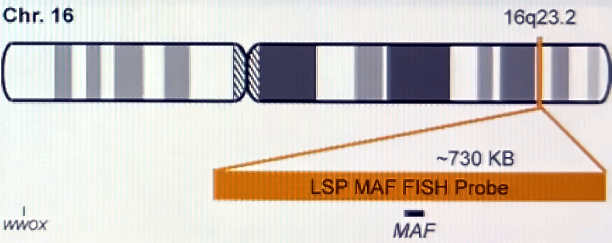
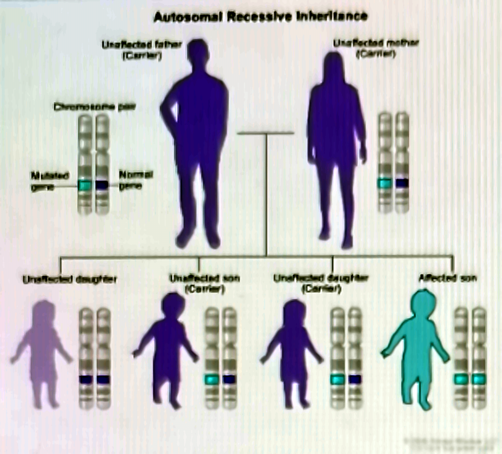
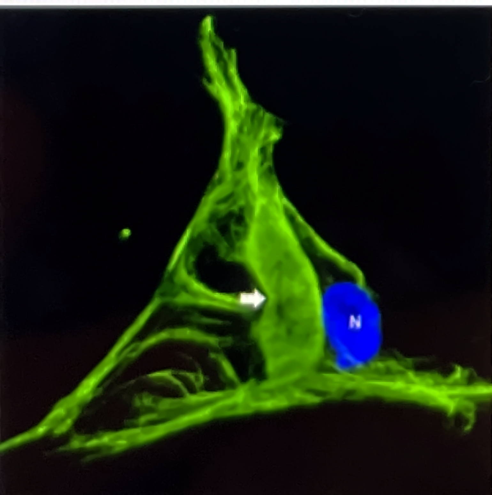
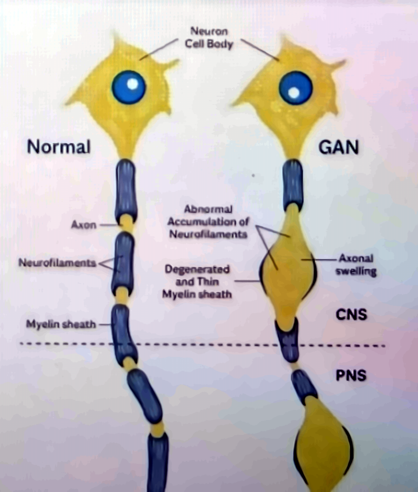
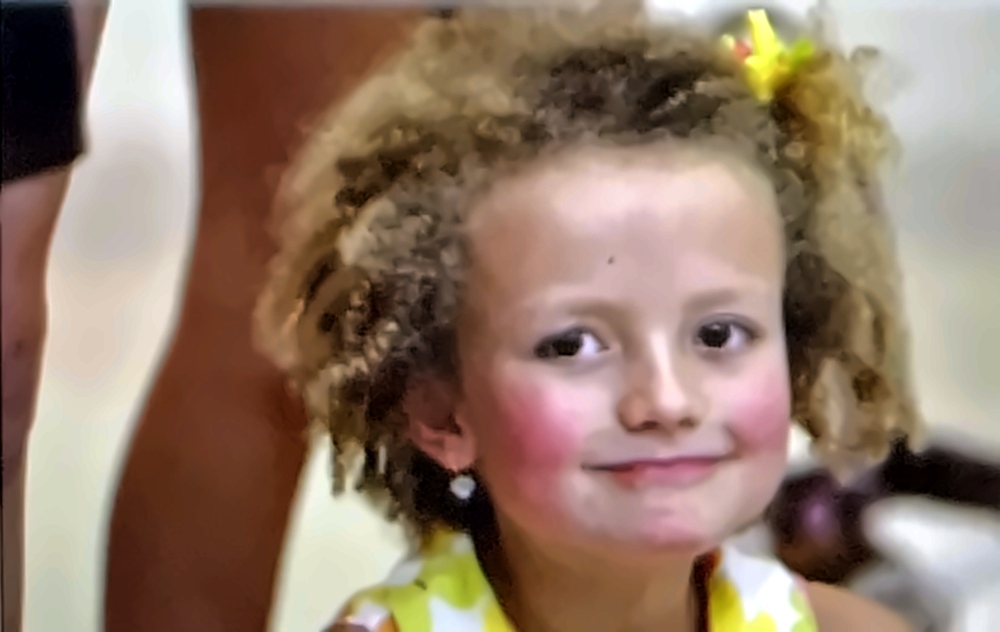

Rare neurogenetic disease · OMIM #256850
From a missing protein to the first gene therapy delivered into the spinal fluid.
The genetic root cause


The gigaxonin pathway — how one missing protein damages the nerve
Both copies carry a loss-of-function variant
The adaptor of the Cul3 E3 ubiquitin ligase is absent
Neurofilaments, vimentin, GFAP and keratin are never ubiquitinated
The proteasome cannot clear them; dense tangles form
Focal "giant" swellings; myelin thins over them
Transport and conduction break down in nerves and brain


Symptoms and clinical course

The case that changed the field
The genetic treatment · scAAV9/JeT-GAN · NIH Clinical Center · NCT02362438
scAAV9 shell: enters neurons, spreads through cord and brain
Healthy human GAN gene with a tiny JeT promoter
Into the CSF — bypassing the blood–brain barrier
Neurons clear aggregates; sensory nerves regenerate
What the trial showed — NEJM, March 2024
Not a cure yet — but the first proof that an "untreatable" childhood neuropathy can be slowed.
Sources: Bharucha-Goebel DX et al. Intrathecal Gene Therapy for Giant Axonal Neuropathy. N Engl J Med 2024;390:1092-1104 · ClinicalTrials.gov NCT02362438 · NIH News, March 2024 · Hannah's Hope Fund · The Children's Inn at NIH, "Hannah's Story" · DNA Science (PLOS), July 2016. Figures adapted from the source poster.